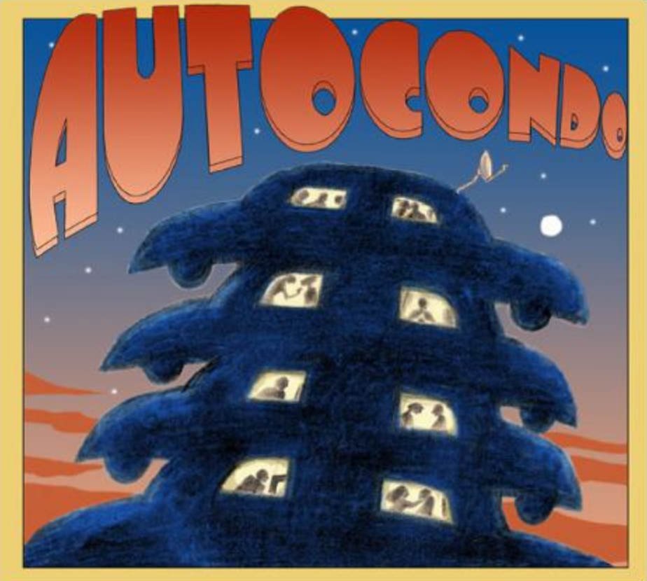

Autocondo

Somewhere in the not-too-distant and highly conceivable future...
After a global economic and environmental meltdown and the demise of the Big Three automakers, a lot more people are now living in their cars. Welcome to the world of Autocondo. Listen below.
BACKGROUND
Tumbleweeds are blowing past the dried-up gas pumps. Derelict oil derricks litter the landscape. The only lights on are coming from the stacks of cars that are now the primary inhabitable abodes left after the condo boom went bust. Wait, we hear sounds drifting across the desolate terrain. Spiraling guitar, fluent keyboards, infectious melody. What do we have here?
We have “Paralyzed,” the riveting lead-off track from Autocondo, the debut album from the group of the same name. Suddenly, our seemingly bleak new world just got a whole lot brighter. 54 minutes later, after a fascinating and heart-warming musical journey, we’re beaming as brightly as our house headlights used to burn.
The Toronto-based band, Autocondo, is built around the multi-faceted talents of three singer/songwriter/guitarists, Tony Duggan-Smith, Neil Chapman and Russell Walker. The album features material co-written by the three principals, who are also represented with strikingly strong individual compositions. Lyrical contributions to two songs come from long-time comrade Graeme Williamson (Pukka Orchestra), further enhancing the refreshingly stylistic eclecticism of this musical fare.
Autocondo will first grab you by the eyeballs, thanks to the compelling and thought-provoking imagery of their album cover created by Martin Springett, an internationally-acclaimed and award-winning designer of book (Guy Gavriel Kay) and album covers (Ian Hunter, Corey Hart). Martin ran with a concept from the fertile imagination of Duggan-Smith. “Current events rehashed in a fevered dream produced the name and a stack of cars,” recalls Duggan-Smith.
Not that Autocondo wanted to be, in Walker’s words, “Al Gore’s theme band. I think we’ve found an apocalyptic sandpit to play in. We can’t see where the cars moved and we’re not going to throw them away. Let’s live in them.” As Duggan-Smith notes, “We’re not writing songs about cars and oil. It’s more like we’re developing a world to fit the band. If the band itself is living in this other fractured universe.”
Autocondo is a group in it for all the right reasons. Its members have all flourished in their individual music-related careers, while working together in different projects over the years. One such outlet was the composer trio for the hit Canadian TV series The Border, reality kicked the Autocondo project into gear. The haunting ballad “Send Her Back” and the grooving “Saw The Light”, both made it into episodes. “We had fragments of song ideas for The Border that had real substance and that we wanted to follow through to the end,” recalls Walker.
There are no borders here. Autocondo are not trying to fit into any particular format or transient musical fad, but are simply concentrating on creating highly melodic, accessible, and well-crafted tunes.
Pinning down a precise definition of the Autocondo sound is about as tricky as getting a politician to speak the unvarnished truth, but Tony gives it a shot. “Roots-pop perhaps.” You can easily hear it in a tune such as “Ende” by Lindisfarne or Ray Davies of the Kinks, while on the non-fictional Autocondo, a fresh take on Lennon and McCartney’s “Cry Baby Cry,” satisfies a key influence.
The resulting recording sessions incorporated A-list Toronto players Steve Heathcote (drums), Matt Horner (keyboards), and Glenn Olive (bass). Invaluable performers and collaborators all. The album was recorded and mixed by Russell Walker in his studio in the city’s west end. Most of the backing tracks were recorded live off the floor to capture the nuanced magic that naturally occurs with seasoned musicianship and the production quality here will surprise no one familiar with the resumes of the three principals.
Together they have crafted an album that sounds just great in this world. Make sure it’s included in your emergency survival kit as you prepare for the next.
Chapman and Duggan-Smith (along with Graeme Williamson) first worked together in Pukka Orchestra, a self-described “urban cult band” that were mainstays of the early 80's Toronto scene. Critical faves, they also notched serious radio play with such infectious singles as “Cherry Beach Express” and “Might As Well Be On Mars” (tunes that certainly stand the test of time), while selling impressive numbers of their self-titled 1984 debut album. Their current comrade, Russell Walker, also tasted 80's pop fame, as a member of the band New Regime.
In the post-Pukka era, Tony and Neil worked together as Neotone. As well as remaining active as a songwriter (he’s currently co-writing with Alannah Myles), Duggan-Smith has pursued a parallel career as a highly-regarded maker and restorer of guitars. He has worked extensively with famed luthier Linda Manzer, building guitars for such artists as Pat Metheny and Bruce Cockburn. The ever-busy Neil Chapman has recorded two solo albums, tours with his southern rock band Zedhead, and is in great demand both as a session player and touring guitarist for the likes of Buffy Sainte-Marie, Bill King’s ‘Saturday Night Fish Fry’ and ‘Rockit 88 Band’.
Walker owns and operates one of Toronto’s premier recording studios, Kitchen Sync. This gave the band the luxury of being able to work on material together in a relaxed, unhurried fashion, something audibly apparent here. Walker and Chapman are also in serious demand as composers for TV and film recently completing ‘Outlaw Bikers’, three one hours on the prosecution of some well known Biker Gangs. “The film score thing is fun, but at the end of the day you’re hanging trimming on someone else’s Christmas tree. I was longing to create something that could have its own life.”
CREDITS
- Neil Chapman- guitars, vocals, bass
- Tony Duggan-Smith – guitars, vocals
- Steve Heathcoate – drums
- Matt Horner – keyboards
- Glenn Olive – Bass
- Russell Walker – guitars, vocals, some keys, computer stuff
With
- Sue Breit – bg’s and lead vocal (Saw the Light Reprise)
- Liz Soderberg and Rob Greenway – bg’s
- Leo Valvasorri – bass (Wits End and Lemego)
- Monte Horton – guitar (Lemego)
- Steve Payne – bass (Cry Baby)
- Charlie Cooley – drums (Better days)
- Brenna, Adham and Akran from Kimbereley School choir (Wits End)
- Produced by Tony Duggan-Smith and Russell Walker
- Engineered by Russell Walker
- Additional Engineering Ryan Ahktari, Dustin Harris, Steve Payne, Jakob Thiesen
- Recorded at Kitchen Sync, Toronto
- Mixed by Dustin Harris and Russell Walker except tracks 3,5 & 7 mixed by Terry Brown
- Mastered by Peter Moore – E-Room
- Cover concept, package design and illustration by Martin Springett
- Final Layout, Compass 360
- Duggan-Smith
- Walker
- Chapman
- Williamson
- Saw The Light Duggan-Smith, Walker
- Wits End Duggan-Smith, Williamson
- Send Her Back Walker
- When The Dust Falls Duggan-Smith, Walker, Williamson
- Crimes Walker, Duggan-Smith
- Better Days Chapman
- Lemego Duggan-Smith
- Cry Baby Lennon, McCartney
- Evolution Walker
- Universe Duggan-Smith, Walker
- Saw The Light (reprise) Duggan-Smith, Breit (Vocals)